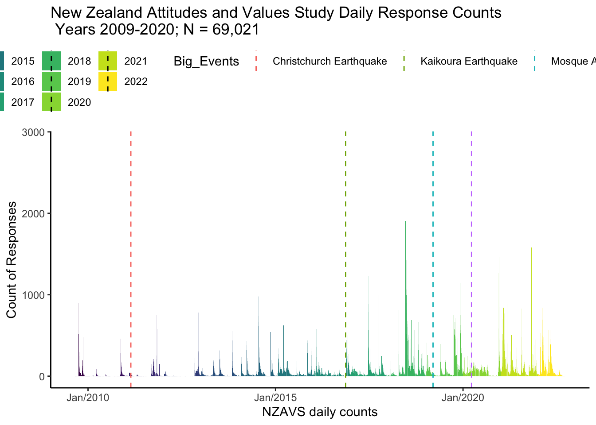

Show the code
# read data
dat <- readRDS(pull_path)
datrep <- dat %>%
dplyr::mutate(timeline = make_date(year = 2009, month = 6, day = 30) + TSCORE) %>%
count(day = floor_date(timeline, "day")) %>%
dplyr::mutate(Year = factor(ifelse(
day < "2010-01-01",
2009,
ifelse(
day < "2011-01-01",
2010,
ifelse(
day < "2012-01-01",
2011,
ifelse(
day < "2013-01-01",
2012,
ifelse(
day < "2014-01-01",
2013,
ifelse(
day < "2015-01-01",
2014,
ifelse(
day < "2016-01-01",
2015,
ifelse(
day < "2017-01-01",
2016,
ifelse(
day < "2018-01-01",
2017,
ifelse(day < "2019-01-01", 2018,
ifelse(day < "2020-01-01", 2019,
ifelse(day < "2021-01-01", 2020,
ifelse(day < "2022-01-01", 2021,2022))
)
)
)
)
)
)
)
)
))) ))%>%
arrange(day)
# create date lines
ceq <- as.Date("2011-02-22")
keq <- as.Date("2016-11-14")
ter <- as.Date("2019-03-15")
cov <- as.Date("2020-03-24")
# get number for dates
ceqD <- which(datrep$day %in% ceq)
keqD <- which(datrep$day %in% keq)
terD <- which(datrep$day %in% ter)
covD <- which(datrep$day %in% cov)
# create dates
d1 <- as.numeric(datrep$day[ceqD])
d2 <- as.numeric(datrep$day[keqD])
d3 <- as.numeric(datrep$day[terD])
d4 <- as.numeric(datrep$day[covD])
# create break points
cuts <-
data.frame(
Big_Events = c(
"Christchurch Earthquake",
"Kaikoura Earthquake",
"Mosque Attacks",
"Stringent COVID-19 LockDown"
),
vals = c(d1, d2, d3, d4),
stringsAsFactors = FALSE
)
pl_1 <- ggplot2::ggplot(datrep, aes(day, n)) +
geom_col(aes(fill = Year)) + scale_x_date(date_labels = "%b/%Y") +
geom_vline(
mapping = aes(xintercept = vals,
colour = Big_Events),
data = cuts,
linetype = "dashed",
show.legend = TRUE
) +
labs(title = "New Zealand Attitudes and Values Study Daily Response Counts\n Years 2009-2020; N = 69,021",
x = "NZAVS daily counts", y = "Count of Responses") + theme_classic() + scale_fill_viridis_d() + theme(legend.position = "top")
#plot
pl_1
ggsave(
pl_1,
path = here::here(here::here("posts", "nzavs" )),
width = 8,
height = 4.5,
units = "in",
filename = "timeline-1.png",
device = "png",
scale = 1,
dpi = 100,
limitsize = TRUE
)
What is the NZAVS?
The New Zealand Attitudes and Values Study (NZAVS) is a national panel study that Professor Chris G Sibley started in 2009. The study has surveyed 69,021 New Zealanders. The NZAVS lab is based at the University of Auckland, and is led by Chris. Figure 1 shows the daily counts of surveys processed at the NZAVS lab. The NZAVS team has grown to over 40 collaborators all over the world.
What makes the NZAVS different?
The NZAVS is a panel study. A panel study is a longitudinal study that follows the same individuals over time. A panel study is different from a census, which samples the population as a whole over time, without tracking individuals.
Time-series data within the same individuals across a diverse population are powerful because they enable a systematic understanding of the causal interplay between human social and psychological processes that occur within people as they respond to consequential events in our lives (“natural experiments”).
The NZAVS maintains an up-to-date contact list as participants move house, change names, change telephone accounts, and change email addresses. The study’s personalised telephone campaigns, holiday cards, and participant prize draws have enabled the NZAVS to maintain a remarkably high annual sample retention rate of 70-80%. (Many longitudinal studies achieve only 20% retention.)
Each year, the NZAVS surveys health, personality, relationships, employment, values, beliefs, and habits within the same people. The study has received responses from 69,021 New Zealanders. Its most recent wave (2021/22) received longitudinal responses from over 33,000 New Zealanders. This is about 1% of New Zealand’s adult population. The NZAVS is distinct from other national panel studies for the breadth of its survey questions with broad coverage in political and social psychology, health, and religion/spirituality and for its temporal scale, which encompasses 13 longitudinal waves.
Where can I go for futher information?
The NZAVS website is maintained by Prof Chris Sibley: Link